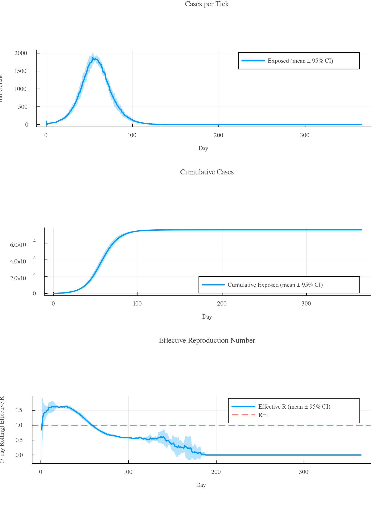
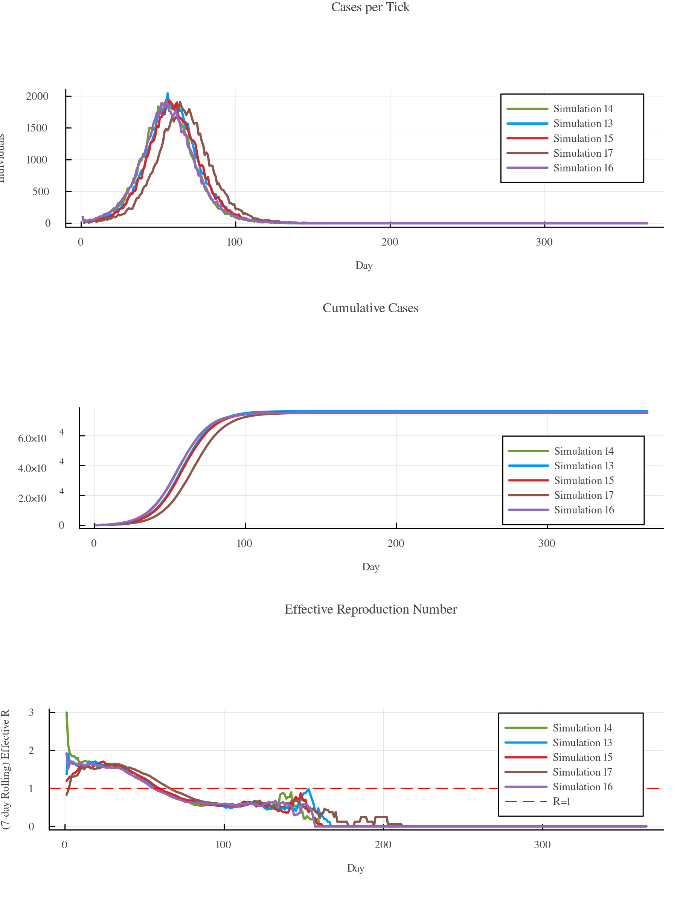
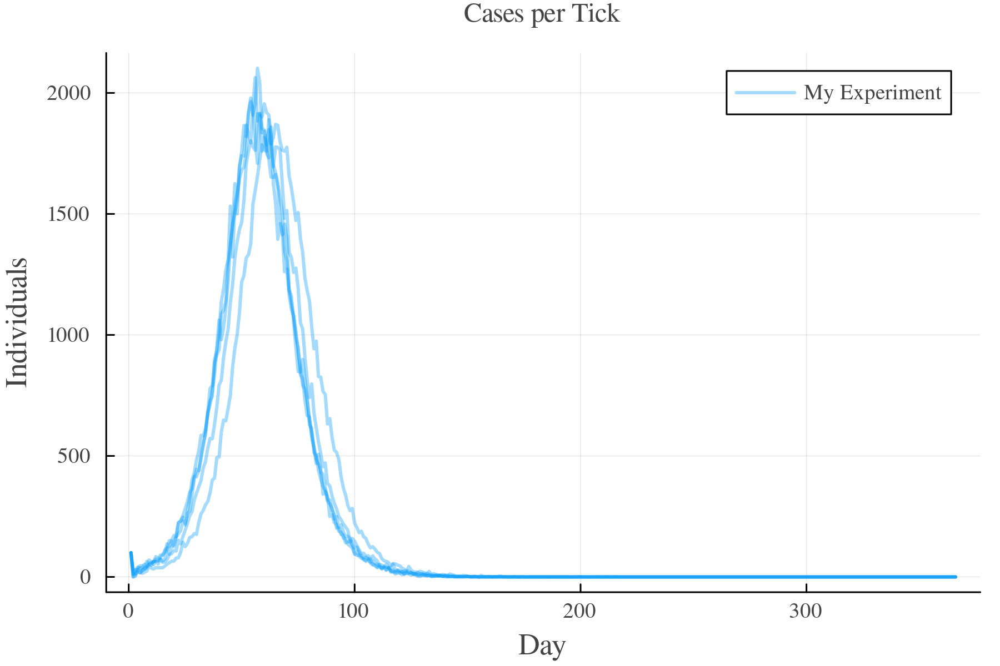
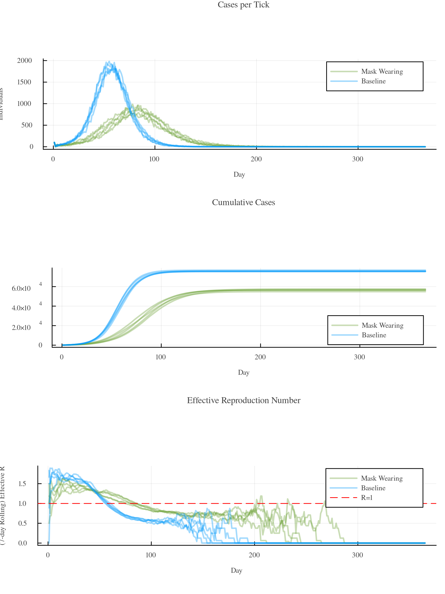
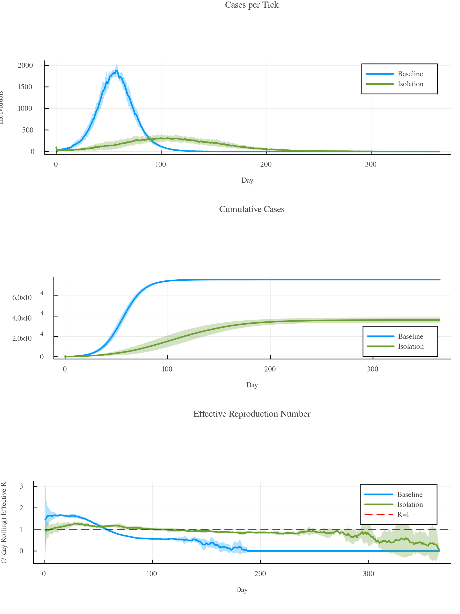
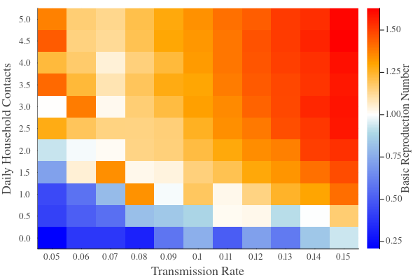
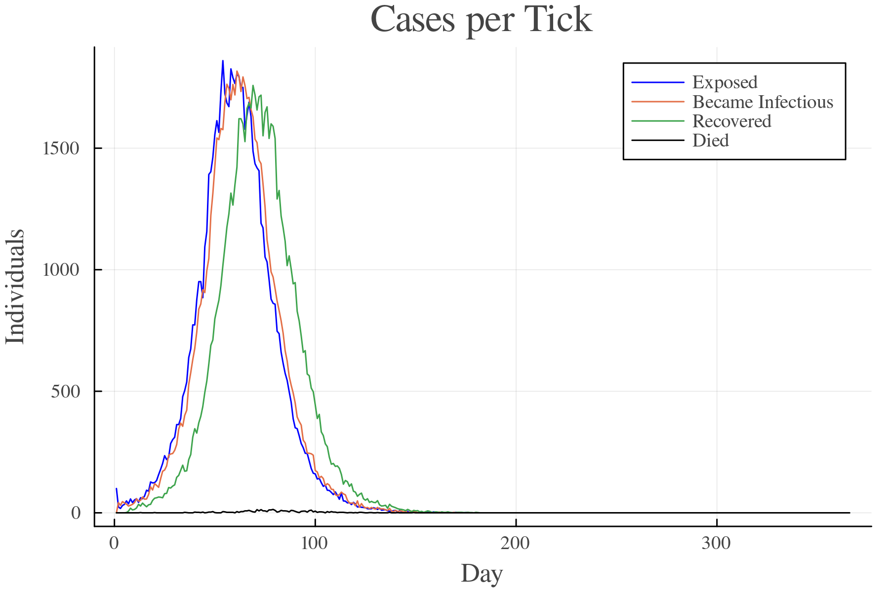
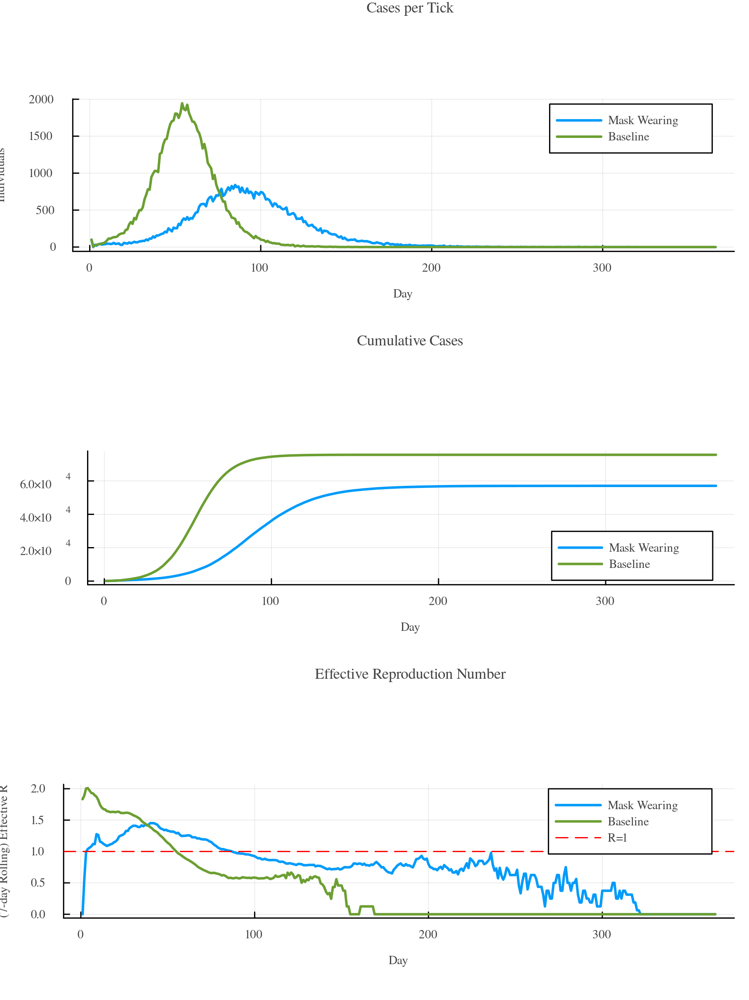

5 - Running Batches
In most situations, running a simulation once is not sufficient. This tutorial teaches you how to work with so-called batches of simulations.
Repeating Simulations
Use Batch(n_runs = N, ...) to create a batch of N identical simulation runs. Any keyword argument accepted by Simulation() can be passed here. Call process!(b) to run all simulations and return a BatchProcessor with the aggregated results. Wrap it in BatchData() to access the data:
using GEMS
b = Batch(n_runs = 5)
bp = process!(b)
bd = BatchData(bp)
gemsplot(bd)Plot

BatchData(b) is a convenient shorthand for the two-step pipeline above:
bd = BatchData(b) # equivalent to BatchData(process!(b))By default, gemsplot(bd) shows a mean line with a 95% confidence interval ribbon. Individual run traces are stored automatically (in a lightweight LightRD format), so you can call runs(bd) directly:
using GEMS
b = Batch(n_runs = 5)
bd = BatchData(b)
gemsplot(runs(bd))Plot

To give the runs a shared name in the legend, pass a label:
using GEMS
b = Batch(n_runs = 5, label = "My Experiment")
bd = BatchData(b)
gemsplot(runs(bd), type = :TickCases)Plot

By default, GEMS stores the ResultData of each individual run so you can access them via runs(bd). For large batches, pass keep_rundata = false to disable this and reduce RAM usage — in that case runs(bd) returns nothing.
process! Arguments
process! accepts the following keyword arguments:
| Keyword | Default | Description |
|---|---|---|
seed | nothing | Integer seed for the RNG. Pass a fixed value for reproducible runs (see Reproducibility). Randomised if omitted. |
median_by | nothing | Criterion function pp -> scalar used to select the representative run (see Median Run). Disabled by default. |
group_by | nothing | A Symbol naming a field in each simulation config to use as the grouping key (e.g. :label). When set, enables per-group analysis via per_group(bd) and per-group median runs. |
keep_rundata | true | When false, individual ResultData objects are not stored, reducing RAM usage. |
rd_style | "LightRD" | ResultData style used when storing individual and median runs. |
customlogger | nothing | A CustomLogger attached to every simulation run. |
All of these can also be passed directly to the BatchData(b; ...) shorthand, which forwards them to process! internally.
BatchData Objects
While ResultData objects are the processed output of single simulation runs, BatchData objects are processed output of batches. They contain aggregated data on the simulations, e.g., the average number of total infections including standard deviation, confidence intervals and ranges. Here's an example:
using GEMS
b = Batch(n_runs = 5, label = "My Experiment")
bd = BatchData(b)
total_infections(bd)Output
Dict{String, Real} with 6 entries:
"upper_95" => 76052.5
"max" => 76088
"min" => 75363
"lower_95" => 75415.1
"mean" => 75733.8
"std" => 256.672Run the info(...) function to get an overview of values that you can retrieve from a BatchData object by calling a function of the same name (e.g., total_infections(...)) on the BatchData object:
info(bd)Output
BatchData Entries
└ meta_data
└ GEMS_version
└ id
└ execution_date
└ dataframes
└ hospitalizations
└ dark_figure
└ generation_times
└ tick_cases
└ cumulative_disease_progressions
└ sero_tests
└ cumulative_cases
└ pool_tests
└ effectiveR
└ observed_R
└ cumulative_quarantines
└ tests
└ sim_data
└ median_run
└ total_detected_cases
└ number_of_runs
└ tick_unit
└ attack_rate
└ detection_rate
└ total_infections
└ total_quarantines
└ total_tests
└ r0
└ runs
└ seed
└ per_group
└ system_data
└ cpu_data
└ git_commit
└ julia_version
└ total_mem_size
└ threads
└ kernel
└ free_mem_size
└ git_branch
└ word_size
└ git_repoCustom BatchDataStyles
t.b.d.
Running Scenarios
GEMS' batch functionalities offer easy options to compare different scenarios and run multiple simulations for each of them. The example below compares a baseline scenario with a scenario with a lower transmission_rate and we assume that this is due to mask-wearing mandates. It spawns five simulations for each scenario, merges them into one batch, and visualises the results grouped by label.
group_by tells GEMS which config field to use for splitting the batch into groups — statistics and plots are then computed per group instead of across all runs combined. Any config field works; :label is a natural choice for scenario comparisons:
using GEMS
baseline = Batch(n_runs = 5, transmission_rate = 0.2, label = "Baseline")
masks = Batch(n_runs = 5, transmission_rate = 0.15, label = "Mask Wearing")
bd = BatchData(merge(baseline, masks); group_by = :label)
gemsplot(bd)Plot

To see the individual simulation traces, pass runs(bd) to gemsplot:
using GEMS
baseline = Batch(n_runs = 5, transmission_rate = 0.2, label = "Baseline")
masks = Batch(n_runs = 5, transmission_rate = 0.15, label = "Mask Wearing")
bd = BatchData(merge(baseline, masks); group_by = :label)
gemsplot(runs(bd))Plot

Attaching Interventions
Pass a setup function to Batch to run custom code on each simulation after it is constructed but before it starts. The function receives the live Simulation object, so you can attach strategies, triggers, and interventions of any complexity:
using GEMS
b = Batch(n_runs = 5,
setup = sim -> begin
strat = IStrategy("Isolation", sim)
add_measure!(strat, SelfIsolation(14))
add_symptom_trigger!(sim, SymptomTrigger(strat))
end)For scenario comparisons where each scenario has a different intervention, each sub-batch carries its own setup. Combine them using merge as usual:
using GEMS
baseline = Batch(n_runs = 5, transmission_rate = 0.2, label = "Baseline")
measures = Batch(n_runs = 5, transmission_rate = 0.2, label = "Isolation",
setup = sim -> begin
strat = IStrategy("Isolation", sim)
add_measure!(strat, SelfIsolation(14))
add_symptom_trigger!(sim, SymptomTrigger(strat))
end)
bd = BatchData(merge(baseline, measures); group_by = :label)
gemsplot(bd)Plot

Sweeping Parameter Spaces
To scan parameter spaces, create one batch per configuration and merge them:
using GEMS
b = merge([Batch(n_runs = 1, transmission_rate = tr, label = "Transmission Rate $tr")
for tr in 0:0.1:0.5]...)
bd = BatchData(b; group_by = :label)
gemsplot(bd, legend = :topright)Plot

You can also vary multiple parameters at once and show the results in a heatmap. This example runs simulations varying the transmission_rate and daily household_contacts, and plots the calculated r0 value of all combinations in a heatmap:
using GEMS
xvals = []
yvals = []
outvals = []
# vary transmission rate
for tr in 0.05:0.01:0.15
# vary household contacts
for con in 0:0.5:5
bd = BatchData(Batch(n_runs = 3, transmission_rate = tr, household_contacts = con))
push!(xvals, tr)
push!(yvals, con)
push!(outvals, r0(bd)["mean"])
end
end
gemsheatmap(xvals, yvals, outvals,
xlabel = "Transmission Rate",
ylabel = "Daily Household Contacts",
colorbar_title = "Basic Reproduction Number",
color = :r0) Plot

Median Run
To identify a representative run, pass a median_by criterion function to process!. GEMS selects the simulation whose criterion value is closest to the median across all runs, re-runs it with the same seed (producing the exact same result), and stores it as the median run — a single ResultData object that can be used as a stand-in for a typical run:
using GEMS
b = Batch(n_runs = 10)
bp = process!(b; median_by = pp -> nrow(infectionsDF(pp)))
rep = median_run(bp)
gemsplot(rep, type = :TickCases)Plot

You can customise the selection criterion by passing any pp -> scalar function:
# Select the run with median deaths instead
bp = process!(b; median_by = pp -> nrow(deathsDF(pp)))Multi-Group Median Runs
When group_by is set, GEMS computes one median run per group. median_runs(bd) returns a vector of ResultData objects (one per group) that you can pass directly to gemsplot():
using GEMS, DataFrames
baseline = Batch(n_runs = 5, transmission_rate = 0.2, label = "Baseline")
masks = Batch(n_runs = 5, transmission_rate = 0.15, label = "Mask Wearing")
b = merge(baseline, masks)
bd = BatchData(b; group_by = :label, median_by = pp -> nrow(infectionsDF(pp)))
gemsplot(median_runs(bd))Plot

Reproducibility
Each call to process! internally assigns a unique seed per run. Pass seed to fix the top-level RNG and get identical results every time:
using GEMS
b = Batch(n_runs = 5)
bd1 = BatchData(b; seed = 42)
bd2 = BatchData(b; seed = 42)
total_infections(bd1) == total_infections(bd2) # true
seed(bd1) # 42